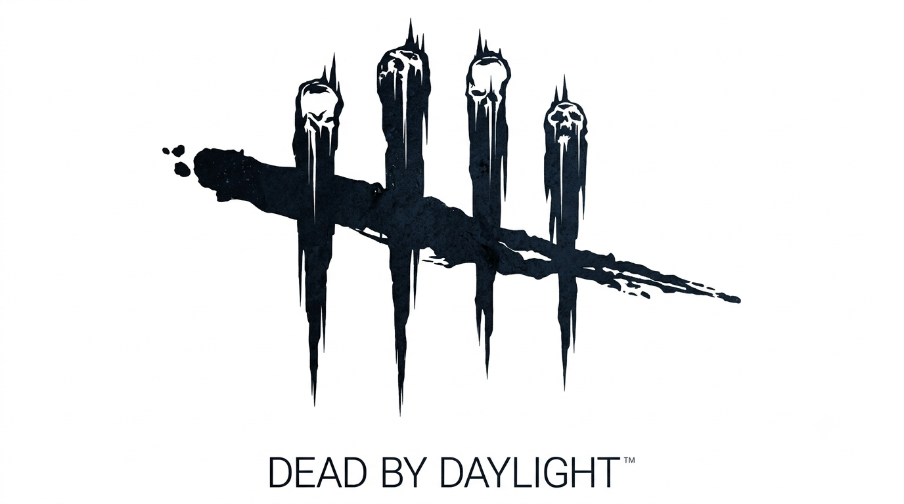

Meu primeiro post
Por: Gabriel Rodrigues
Boas-vindas ao meu novo blog! Aqui vou compartilhar dicas e curiosidades sobre o famoso jogo de terror online Dead by Daylight.
Mas, você sabe o que é o Dbd?
Por: Gabriel Rodrigues
Dead by Daylight (ou só DbD) é basicamente aquele pega-pega tenso que você jogava na infância, só que valendo a sua vida e cheio de sangue KKKKK. A parada é simples: são 4 Sobreviventes desesperados tentando consertar geradores pra fugir, enquanto 1 Assassino brabo tenta caçar todo mundo. É puro suco de pânico, estratégia, gritaria no Discord e decisões suspeitas.